Proyecto Final: Predicción de la demanda de energía eléctrica para una compañía del sector O&G#
Datos reales anoninimizados de los historicos de consumo de energía de una empresa del sector Oil and Gas en colombia.
El objetivo del proyecto es predecir el consumo diario de energía eléctrica, esto es un input importante para el despacho eficiente de energía en este tipo de compañías, un dato adecuado del consumo futuro permite alinear los sistemas de generación más costo eficientes que logren atender esta demanda
from matplotlib import rcParams, cycler
import matplotlib.pyplot as plt
import numpy as np
plt.ion()
<contextlib.ExitStack at 0x178be93cf40>
Leyendo el archivo#
import pandas as pd
archivo = r'C:\Users\cjcam\Desktop\Msc_Matematicas\ST\Demanda_ECP.csv'
df = pd.read_csv(archivo, encoding='latin1', sep=';', decimal=',')
df.head()
| fecha | Demanda MW | |
|---|---|---|
| 0 | 44197 | 3.2818 |
| 1 | 44198 | 3.3436 |
| 2 | 44199 | 3.3460 |
| 3 | 44200 | 3.3910 |
| 4 | 44201 | 3.3606 |
# Generar el rango de fechas mensuales
date_range = pd.date_range(start='2021-01-01', end='2024-10-20', freq='D')
df.index = date_range
df.head()
| fecha | Demanda MW | |
|---|---|---|
| 2021-01-01 | 44197 | 3.2818 |
| 2021-01-02 | 44198 | 3.3436 |
| 2021-01-03 | 44199 | 3.3460 |
| 2021-01-04 | 44200 | 3.3910 |
| 2021-01-05 | 44201 | 3.3606 |
Analisis grafico#
df_combined=df
# Crear la gráfica de la serie de tiempo
plt.figure(figsize=(10, 6)) # Tamaño de la figura
plt.plot(df_combined.index, df_combined['Demanda MW'], label='Energia')
# Etiquetas y título
plt.xlabel('Fecha')
plt.ylabel('Demanda Energia')
plt.title('Tendencia de la demanda electrica en compañia O&G')
# Mostrar la leyenda y la gráfica
plt.legend()
plt.grid(True)
plt.show()
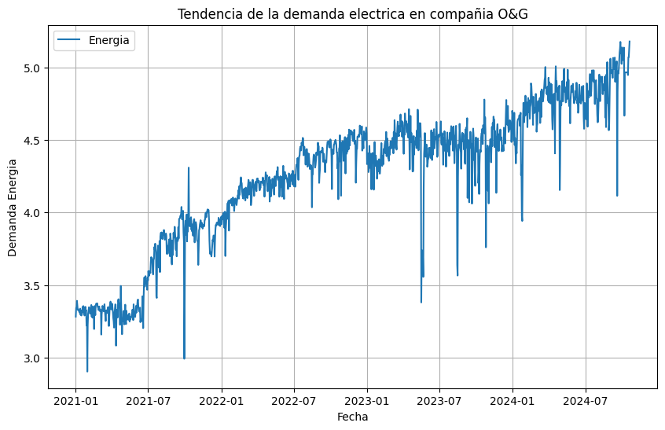
frecuencia = pd.infer_freq(df_combined.index)
print("Frecuencia: ", frecuencia)
Frecuencia: D
Se puede observar una tendencia de crecimiento general en la serie de tiempo (que tiene una frecuencia diaria), esto podría atribuirse a la mayor producción de crudo y agua , es importante resaltar que si realiza un “zoom” en un mes particular se pueden ver variaciones en el consumo de energía que podrían ocultar la tendencia general si no se mira con suficiente data hacia el pasadp
df_31 = df_combined.tail(31)
# Establecer la columna 'Fecha' como el índice del DataFrame
# Crear la gráfica de la serie de tiempo
plt.figure(figsize=(10, 6)) # Tamaño de la figura
plt.plot(df_31.index, df_31['Demanda MW'], label='Energia')
# Etiquetas y título
plt.xlabel('Fecha')
plt.ylabel('Demanda Energia')
plt.title('Tendencia de la demanda electrica en compañia O&G')
# Mostrar la leyenda y la gráfica
plt.legend()
plt.grid(True)
plt.show()
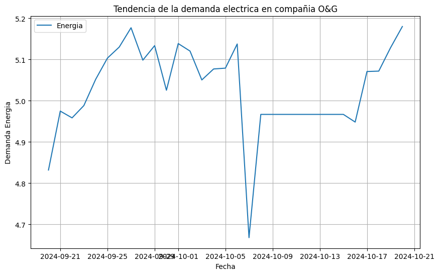
Modelo de tendencia lineal#
pip install -U sklearn-learn
Note: you may need to restart the kernel to use updated packages.
ERROR: Could not find a version that satisfies the requirement sklearn-learn (from versions: none)
ERROR: No matching distribution found for sklearn-learn
from sklearn.linear_model import LinearRegression
import numpy as np
trend_model = LinearRegression(fit_intercept=True)
trend_model.fit(np.arange(df_combined.shape[0]).reshape((-1,1)), df_combined['Demanda MW'])
LinearRegression()In a Jupyter environment, please rerun this cell to show the HTML representation or trust the notebook.
On GitHub, the HTML representation is unable to render, please try loading this page with nbviewer.org.
LinearRegression()
print('Trend model coefficient={} and intercept={}'.format(trend_model.coef_[0], trend_model.intercept_))
Trend model coefficient=0.0011056187466715187 and intercept=3.4851751556846957
residuals = np.array(df_combined['Demanda MW']) - trend_model.predict(np.arange(df_combined.shape[0]).reshape((-1,1)))
plt.figure(figsize=(5.5, 5.5))
pd.Series(data=residuals, index=df_combined['Date']).plot(color='b')
plt.title('Residuales del modelo de tendencia - consumo energia O&G')
plt.xlabel('Time')
plt.ylabel('Energia kWh')
plt.xticks(rotation=30);
---------------------------------------------------------------------------
KeyError Traceback (most recent call last)
File ~\miniconda3\envs\ml_venv\lib\site-packages\pandas\core\indexes\base.py:3805, in Index.get_loc(self, key)
3804 try:
-> 3805 return self._engine.get_loc(casted_key)
3806 except KeyError as err:
File index.pyx:167, in pandas._libs.index.IndexEngine.get_loc()
File index.pyx:196, in pandas._libs.index.IndexEngine.get_loc()
File pandas\\_libs\\hashtable_class_helper.pxi:7081, in pandas._libs.hashtable.PyObjectHashTable.get_item()
File pandas\\_libs\\hashtable_class_helper.pxi:7089, in pandas._libs.hashtable.PyObjectHashTable.get_item()
KeyError: 'Date'
The above exception was the direct cause of the following exception:
KeyError Traceback (most recent call last)
Cell In[12], line 2
1 plt.figure(figsize=(5.5, 5.5))
----> 2 pd.Series(data=residuals, index=df_combined['Date']).plot(color='b')
3 plt.title('Residuales del modelo de tendencia - consumo energia O&G')
4 plt.xlabel('Time')
File ~\miniconda3\envs\ml_venv\lib\site-packages\pandas\core\frame.py:4102, in DataFrame.__getitem__(self, key)
4100 if self.columns.nlevels > 1:
4101 return self._getitem_multilevel(key)
-> 4102 indexer = self.columns.get_loc(key)
4103 if is_integer(indexer):
4104 indexer = [indexer]
File ~\miniconda3\envs\ml_venv\lib\site-packages\pandas\core\indexes\base.py:3812, in Index.get_loc(self, key)
3807 if isinstance(casted_key, slice) or (
3808 isinstance(casted_key, abc.Iterable)
3809 and any(isinstance(x, slice) for x in casted_key)
3810 ):
3811 raise InvalidIndexError(key)
-> 3812 raise KeyError(key) from err
3813 except TypeError:
3814 # If we have a listlike key, _check_indexing_error will raise
3815 # InvalidIndexError. Otherwise we fall through and re-raise
3816 # the TypeError.
3817 self._check_indexing_error(key)
KeyError: 'Date'
<Figure size 550x550 with 0 Axes>
Se presenta una grafica de residuales del modelo lineal de tendencia general: Los residuales muestran mucha variabilidad, con fluctuaciones significativas a lo largo del tiempo.
Tendencias observadas:
Los residuales muestran mucha variabilidad, con fluctuaciones significativas a lo largo del tiempo.
Se observa que alrededor de mediados de 2021 y hasta mediados de 2022, los residuales tienden a estar en la parte superior del eje y (valores positivos), lo que sugiere que el modelo tiende a subestimar el consumo de energía en este período.
Desde mediados de 2022 en adelante, los residuales parecen variar con amplitudes altas en ambos sentidos (tanto positivos como negativos), lo que indica que el modelo tiene problemas tanto para sobreestimar como subestimar los valores, con grandes variaciones en los errores de predicción.
Hay algunos picos negativos notables (alrededor de enero de 2022, julio de 2023 y enero de 2024), lo que sugiere que en estos puntos específicos, el modelo sobreestimó considerablemente el consumo de energía.
Los picos positivos, aunque menos extremos, también aparecen en momentos como finales de 2021, donde el modelo claramente subestima los valores.
No es explicita la estacionalidad pero es claro que existe una tendencia temporal que un modelo de tendencia lineal no es capaz de capturar
El modelo de tendencia aplicado tiene errores significativos en varios puntos, lo que indica que el patrón de consumo de energía en este contexto es altamente complejo y no es capturado perfectamente por la tendencia general utilizada en el modelo.
Es probable que un modelo de regresión simple no sea suficiente para capturar todas las variaciones en el consumo de energía, por lo que podrían considerarse otras estrategias, como agregar términos estacionales, modelado no lineal, o usar modelos más avanzados como ARIMA, redes neuronales u otros enfoques de series temporales.
Analisis de autocorrelacion#
lag = range(0,31)
acf = []
for l in lag:
acf.append(df_combined['Demanda MW'].autocorr(l))
plt.figure(figsize=(5.5, 5.5))
plt.plot(acf, marker='.', color='b')
plt.title('Autocorrelacion para consumo de energia O&G')
plt.xlabel('Lag # de dias')
plt.ylabel('Autocorrelacion');
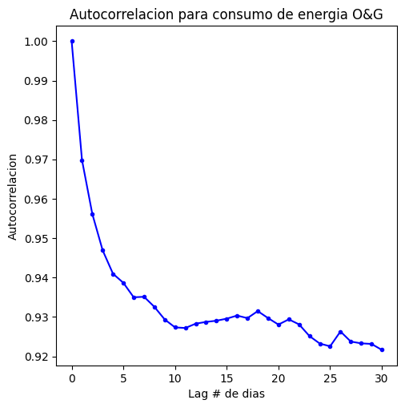
Patrón observado:
Decaimiento rápido: La autocorrelación empieza en 1.0 (lag 0), lo cual es esperado, ya que cualquier serie de tiempo está perfectamente correlacionada consigo misma en el lag 0.
Sin embargo, la autocorrelación disminuye rápidamente conforme aumentan los días de retraso, aunque sigue siendo bastante alta hasta el lag de 30 días. Esto sugiere que los valores de consumo de energía están fuertemente correlacionados a lo largo del tiempo, pero esta correlación se debilita conforme el retraso entre las observaciones es mayor.
Autocorrelación fuerte a corto plazo:
Los primeros 5 lags (días) muestran una autocorrelación muy alta, lo que sugiere que el consumo de energía en un día está altamente relacionado con el consumo de energía de los días inmediatamente anteriores.Esto indica que existe una fuerte dependencia temporal en los datos a corto plazo.
Decaimiento gradual:
Después del lag 5, la autocorrelación continúa disminuyendo gradualmente, pero se mantiene en niveles altos (alrededor de 0.92). Esto puede indicar que, aunque el consumo de energía sigue correlacionado con días pasados, la fuerza de la correlación disminuye con el tiempo.
Este tipo de comportamiento es típico en series temporales con tendencia, donde los valores tienden a estar correlacionados con sus valores pasados, pero la influencia de esos valores disminuye con el tiempo.
pip install statsmodels
from statsmodels.graphics.tsaplots import plot_acf
plt.figure(figsize=(5.5, 5.5));
plot_acf(df_combined['Demanda MW'], lags=120);
<Figure size 550x550 with 0 Axes>
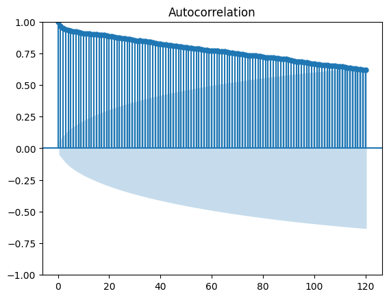
Comportamiento general de la autocorrelación:
Autocorrelación alta en los primeros lags: El valor de la autocorrelación empieza cerca de 1.0 en el lag 0, como es esperado, ya que cualquier serie de tiempo está perfectamente correlacionada consigo misma en ese punto.
La autocorrelación disminuye gradualmente conforme aumenta el número de lags, pero el decaimiento es lento. Aún en lag 100, la autocorrelación es alta, lo cual indica que hay dependencia a largo plazo en los datos.
Esto sugiere que la serie temporal tiene una fuerte tendencia o persistencia, es decir, los valores futuros dependen significativamente de los valores pasados.
Decaimiento lento y persistente:
El hecho de que la autocorrelación no decaiga rápidamente a cero indica la presencia de una tendencia clara en los datos. Esto puede sugerir que el proceso que genera esta serie temporal tiene memoria a largo plazo, donde los valores pasados siguen influyendo en los valores futuros incluso después de muchos retrasos (lags).
Bandas de confianza:
Las bandas sombreadas representan el intervalo de confianza para la autocorrelación. Los valores de autocorrelación que caen fuera de estas bandas se consideran estadísticamente significativos. En este caso, la mayoría de los valores de autocorrelación están muy por encima de las bandas de confianza, lo que indica que las correlaciones entre los valores retrasados son significativas. Esto refuerza la idea de que hay una fuerte dependencia temporal en la serie de tiempo.
from statsmodels.graphics.tsaplots import plot_pacf
plt.figure(figsize=(5.5, 5.5));
plot_pacf(df_combined['Demanda MW'], lags=31);
<Figure size 550x550 with 0 Axes>
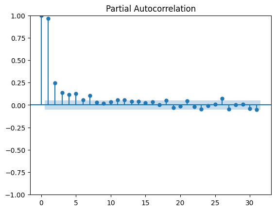
Se complementa el analisis con la autocorrelacion parcial que permite precisar el numero de lags para un modelo AR , eliminando la influencia de variables intermedias.
Se observa que los lags 1 , 2 y 3 son claramente significativos, el lag 4 esta por fuera de la banda de confianza muy cercano al limite y el 5 retoma el crecimiento, el 6 no es significativo y 7 lo es ligeramente, esto sugiere algunos comportamientos no lineales , efectos retardados o multicolinealidad.
en función de la gráfica se sugeriría iniciar con un AR (5).
Estadisticos Moviles#
weekly_moving_average= df_combined['Demanda MW'].rolling(7).mean()
monthly_moving_average = df_combined['Demanda MW'].rolling(30).mean()
fig, axarr = plt.subplots(3, sharex=True)
fig.set_size_inches(5.5, 5,5)
df_combined['Demanda MW'].plot(ax=axarr[0], color='b')
axarr[0].set_title('Demanda diaria de energia O&G');
weekly_moving_average.plot(ax=axarr[1], color='r')
axarr[1].set_title('Weekly moving average');
monthly_moving_average.plot(ax=axarr[2], color='g')
axarr[2].set_title('Monthly moving average');
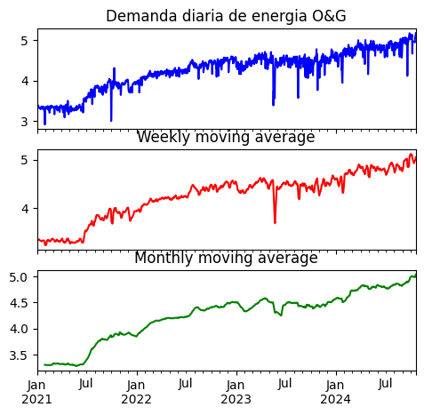
Variabilidad: La demanda diaria de energía (primera gráfica) muestra una alta volatilidad, con fluctuaciones que son comunes en los datos diarios. Sin embargo, al aplicar promedios móviles, puedes suavizar estas fluctuaciones para observar patrones más claros.
Tendencia: A medida que se aumenta el tamaño de la ventana de promedio móvil (de semanal a mensual), se vuelve más fácil identificar la tendencia general creciente en la demanda de energía. Las gráficas semanales y mensuales revelan que, aunque hay eventos de corta duración que afectan la demanda, la tendencia general sigue siendo positiva a largo plazo.
Suavización: El promedio móvil mensual (gráfica inferior) es el que ofrece una visión más estable y clara de la evolución de la demanda de energía, eliminando la mayor parte de las fluctuaciones de corto plazo
Eliminación de tendencia#
import pandas as pd
import numpy as np
from statsmodels.tsa import stattools
from matplotlib import pyplot as plt
from pandas.plotting import autocorrelation_plot
df_combined.index = df_combined['Date']
df_combined.drop('fecha', axis=1, inplace=True)
df_combined.head()
| fecha | Demanda MW | |
|---|---|---|
| 2021-01-01 | 44197 | 3.2818 |
| 2021-01-02 | 44198 | 3.3436 |
| 2021-01-03 | 44199 | 3.3460 |
| 2021-01-04 | 44200 | 3.3910 |
| 2021-01-05 | 44201 | 3.3606 |
first_order_diff = df_combined['Demanda MW'].diff(1)
fig, ax = plt.subplots(2, sharex=True)
fig.set_size_inches(5.5, 5.5)
df_combined['Demanda MW'].plot(ax=ax[0], color='b');
ax[0].set_title('Demanda energia diaria O&G');
first_order_diff.plot(ax=ax[1], color='r');
ax[1].set_title('1st-order differences of Demanda Energia diaria O&G');
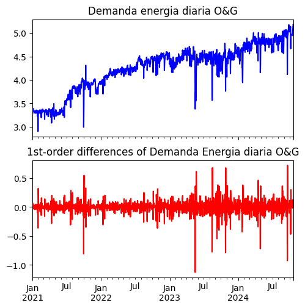
Es visible la eliminación de la tendencia, los datos estan en al rededor de 0 y no se observan patrones a simple vista
import matplotlib.pyplot as plt
from pandas.plotting import autocorrelation_plot
# Suponiendo que 'df_combined' y 'first_order_diff' están previamente definidos
fig, ax = plt.subplots(2, sharex=True)
fig.set_size_inches(5.5, 5.5)
# Gráfico de autocorrelación para la columna 'Demanda MW'
autocorrelation_plot(df_combined['Demanda MW'], color='b', ax=ax[0])
ax[0].set_title('ACF Demanda de energía diaria O&G')
# Gráfico de autocorrelación para la primera diferencia de la serie temporal
autocorrelation_plot(first_order_diff.iloc[1:], color='r', ax=ax[1])
ax[1].set_title('ACF Primera diferencia')
plt.show()
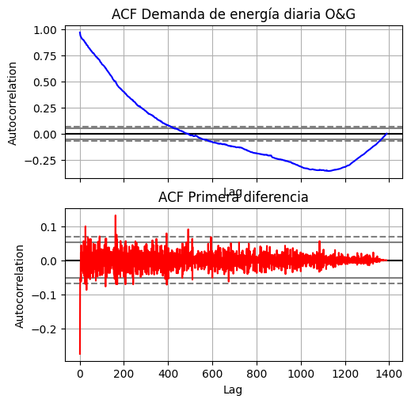
from statsmodels.tsa import stattools
# Calcular ACF, intervalos de confianza, estadística Q y valores p
acf, confint, qstat, pvalues = stattools.acf(df_combined['Demanda MW'],
nlags=30,
qstat=True,
alpha=0.05)
alpha = 0.05
for l, p_val in enumerate(pvalues):
if p_val > alpha:
print('Null hypothesis is accepted at lag = {} for p-val = {}'.format(l, p_val))
else:
print('Null hypothesis is rejected at lag = {} for p-val = {}'.format(l, p_val))
Null hypothesis is rejected at lag = 0 for p-val = 3.943857348807509e-285
Null hypothesis is rejected at lag = 1 for p-val = 0.0
Null hypothesis is rejected at lag = 2 for p-val = 0.0
Null hypothesis is rejected at lag = 3 for p-val = 0.0
Null hypothesis is rejected at lag = 4 for p-val = 0.0
Null hypothesis is rejected at lag = 5 for p-val = 0.0
Null hypothesis is rejected at lag = 6 for p-val = 0.0
Null hypothesis is rejected at lag = 7 for p-val = 0.0
Null hypothesis is rejected at lag = 8 for p-val = 0.0
Null hypothesis is rejected at lag = 9 for p-val = 0.0
Null hypothesis is rejected at lag = 10 for p-val = 0.0
Null hypothesis is rejected at lag = 11 for p-val = 0.0
Null hypothesis is rejected at lag = 12 for p-val = 0.0
Null hypothesis is rejected at lag = 13 for p-val = 0.0
Null hypothesis is rejected at lag = 14 for p-val = 0.0
Null hypothesis is rejected at lag = 15 for p-val = 0.0
Null hypothesis is rejected at lag = 16 for p-val = 0.0
Null hypothesis is rejected at lag = 17 for p-val = 0.0
Null hypothesis is rejected at lag = 18 for p-val = 0.0
Null hypothesis is rejected at lag = 19 for p-val = 0.0
Null hypothesis is rejected at lag = 20 for p-val = 0.0
Null hypothesis is rejected at lag = 21 for p-val = 0.0
Null hypothesis is rejected at lag = 22 for p-val = 0.0
Null hypothesis is rejected at lag = 23 for p-val = 0.0
Null hypothesis is rejected at lag = 24 for p-val = 0.0
Null hypothesis is rejected at lag = 25 for p-val = 0.0
Null hypothesis is rejected at lag = 26 for p-val = 0.0
Null hypothesis is rejected at lag = 27 for p-val = 0.0
Null hypothesis is rejected at lag = 28 for p-val = 0.0
Null hypothesis is rejected at lag = 29 for p-val = 0.0
acf_first_diff, confint_first_diff,\
qstat_first_diff, pvalues_first_diff = stattools.acf(first_order_diff.iloc[1:],
nlags=20,
qstat=True,
alpha=0.05)
alpha = 0.05
for l, p_val in enumerate(pvalues_first_diff):
if p_val > alpha:
print('Null hypothesis is accepted at lag = {} for p-val = {}'.format(l, p_val))
else:
print('Null hypothesis is rejected at lag = {} for p-val = {}'.format(l, p_val))
Null hypothesis is rejected at lag = 0 for p-val = 1.3183037154445652e-24
Null hypothesis is rejected at lag = 1 for p-val = 3.581928083599108e-25
Null hypothesis is rejected at lag = 2 for p-val = 3.952119821260692e-25
Null hypothesis is rejected at lag = 3 for p-val = 2.4160974528906585e-25
Null hypothesis is rejected at lag = 4 for p-val = 1.023771287623873e-24
Null hypothesis is rejected at lag = 5 for p-val = 3.8102427747747204e-25
Null hypothesis is rejected at lag = 6 for p-val = 5.106050467121279e-25
Null hypothesis is rejected at lag = 7 for p-val = 2.1375986510970655e-24
Null hypothesis is rejected at lag = 8 for p-val = 6.906879414080544e-24
Null hypothesis is rejected at lag = 9 for p-val = 1.508069033043693e-23
Null hypothesis is rejected at lag = 10 for p-val = 4.313226488305208e-23
Null hypothesis is rejected at lag = 11 for p-val = 1.4358040927793022e-22
Null hypothesis is rejected at lag = 12 for p-val = 4.711230009973974e-22
Null hypothesis is rejected at lag = 13 for p-val = 1.43274043542591e-21
Null hypothesis is rejected at lag = 14 for p-val = 4.4980609928960904e-21
Null hypothesis is rejected at lag = 15 for p-val = 9.818198285910501e-21
Null hypothesis is rejected at lag = 16 for p-val = 1.1472966229555734e-20
Null hypothesis is rejected at lag = 17 for p-val = 4.6310604050129994e-21
Null hypothesis is rejected at lag = 18 for p-val = 1.3194027851305008e-20
Null hypothesis is rejected at lag = 19 for p-val = 9.69844361801027e-21
Aun se rechaza la hipotesis en la diferenciación de primer orden, pero en la de segundo orden el valor es 0 y no se puede calcular, se revisará esto con mayor detalle en la estructuración de los modelos.
Prueba de estacionariedad#
adf_result = stattools.adfuller(df_combined['Demanda MW'], autolag='AIC')
print('p-val of the ADF test in energy demand:', adf_result[1])
p-val of the ADF test in energy demand: 0.685441372403153
Era claro en las graficas que la energía tiene una tendencia al crecimiento y por lo tanto no es estacionaria, esto se comprueba la prueba de Dickey-Fuller , donde no es posible rechazar la hipotesis de una raiz unitaria en la serie
Descomposicion de la serie temporal#
# Resamplear los datos para calcular el promedio mensual
df_monthly_avg = df_combined.resample('M').mean()
# Mostrar el DataFrame con los datos promedios mensuales
df_monthly_avg.head()
C:\Users\cjcam\AppData\Local\Temp\ipykernel_23612\454346377.py:2: FutureWarning: 'M' is deprecated and will be removed in a future version, please use 'ME' instead.
df_monthly_avg = df_combined.resample('M').mean()
| fecha | Demanda MW | |
|---|---|---|
| 2021-01-31 | 44212.0 | 3.302271 |
| 2021-02-28 | 44241.5 | 3.331386 |
| 2021-03-31 | 44271.0 | 3.319226 |
| 2021-04-30 | 44301.5 | 3.309813 |
| 2021-05-31 | 44332.0 | 3.291381 |
MA12 = df_monthly_avg['Demanda MW'].rolling(window=6).mean()
trendComp = MA12.rolling(window=2).mean()
# Luego, extraer el mes
df_monthly_avg['mes'] = df_monthly_avg.index.month.astype(str).str.zfill(2)
len(df_monthly_avg)
46
# Cálculo de residuales
residuals = df_monthly_avg['Demanda MW'] - trendComp
# Asegurarse de que el mes sea un valor manejable (si son enteros)
month = df_monthly_avg['mes']
# Calcular el promedio de los residuales por cada mes
monthwise_avg = residuals.groupby(by=month).aggregate(['mean'])
# Número de observaciones deseado
num_observations = 46
# Repetir la componente estacional
seasonalComp = np.tile(monthwise_avg.values.flatten(), (num_observations // 12) + 1)[:num_observations]
# Mostrar la longitud para comprobar que tiene exactamente 1187 datos
print(len(seasonalComp))
46
irr_var = df_monthly_avg['Demanda MW'] - trendComp - seasonalComp
fig, axarr = plt.subplots(4, sharex=True)
fig.set_size_inches(5.5, 5.5)
df_monthly_avg['Demanda MW'].plot(ax=axarr[0], color='b', linestyle='-')
axarr[0].set_title('Monthly energy demand')
pd.Series(data=trendComp, index=df_monthly_avg.index).plot(ax=axarr[1], color='r', linestyle='-')
axarr[1].set_title('Trend component in monthly energy demand')
pd.Series(data=seasonalComp, index=df_monthly_avg.index).plot(ax=axarr[2], color='g', linestyle='-')
axarr[2].set_title('Seasonal component in monthly energy demand')
pd.Series(data=irr_var, index=df_monthly_avg.index).plot(ax=axarr[3], color='k', linestyle='-')
axarr[3].set_title('Irregular variations in monthly energy demand')
plt.tight_layout(pad=0.4, w_pad=0.5, h_pad=2.0)
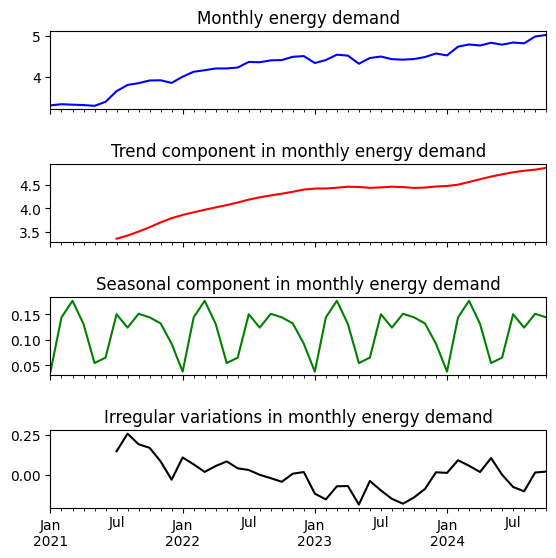
adf_result = stattools.adfuller(irr_var.loc[~pd.isnull(irr_var)], autolag='AIC')
print('p-val of the ADF test on irregular variations in energy demand:', adf_result[1])
p-val of the ADF test on irregular variations in energy demand: 0.10117009657908366
Se observa que es posible extraer la tendencia general de la serie y se representa un patron de estacionalidad, pero en los errores irreducibles aun no es posible concluir no estacionariedad por lo que se probará un modelo multiplicativo
residuals = df_monthly_avg['Demanda MW'] / trendComp
# Asegurarse de que el mes sea un valor manejable (si son enteros)
month = df_monthly_avg['mes']
# Calcular el promedio de los residuales por cada mes
monthwise_avg = residuals.groupby(by=month).aggregate(['mean'])
# Número de observaciones deseado
num_observations = 46
# Repetir la componente estacional
seasonalComp = np.tile(monthwise_avg.values.flatten(), (num_observations // 12) + 1)[:num_observations]
# Mostrar la longitud para comprobar
print(len(seasonalComp))
46
irr_var = df_monthly_avg['Demanda MW'] / (trendComp * seasonalComp)
fig, axarr = plt.subplots(4, sharex=True)
fig.set_size_inches(5.5, 5.5)
df_monthly_avg['Demanda MW'].plot(ax=axarr[0], color='b', linestyle='-')
axarr[0].set_title('Monthly energy demand')
pd.Series(data=trendComp, index=df_monthly_avg.index).plot(ax=axarr[1], color='r', linestyle='-')
axarr[1].set_title('Trend component in monthly energy demand')
pd.Series(data=seasonalComp, index=df_monthly_avg.index).plot(ax=axarr[2], color='g', linestyle='-')
axarr[2].set_title('Seasonal component in monthly energy demand')
pd.Series(data=irr_var, index=df_monthly_avg.index).plot(ax=axarr[3], color='k', linestyle='-')
axarr[3].set_title('Irregular variations in monthly energy demand')
plt.tight_layout(pad=0.4, w_pad=0.5, h_pad=2.0)
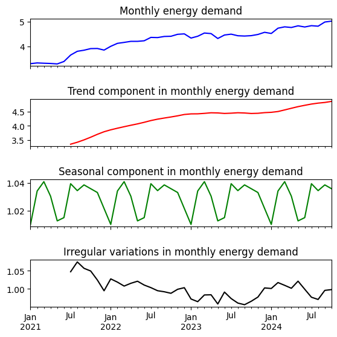
adf_result = stattools.adfuller(irr_var.loc[~pd.isnull(irr_var)], autolag='AIC')
print('p-val of the ADF test on irregular variations in energy demand:', adf_result[1])
p-val of the ADF test on irregular variations in energy demand: 0.12532153766789922
En este caso la descomposicion multiplicativa tampoco fue suficiente lo que sugiere que aún existen patrones por capturar, esto será relevante a la hora de escoger modelos que sean lo suficientemente robustos para capturar la estructura subyacente de la serie de tiempo.
diff_residuals = residuals.diff(1).dropna()
from statsmodels.tsa.stattools import adfuller
adf_result = adfuller(diff_residuals,autolag='AIC')
print(adf_result[1]) # p-value
7.170092910515433e-08
Diferenciando los residuales en primer orden se obtiene un p-valor menor a 0,05 indicando estacionariedad, lo que reafirma que la descomposición no fue suficiente para capturar la estructura real de la serie, esto indica que el modelo que representa la serie de tiempo debe ser más robusto.
Estas tendencias en los errores indican que se necesitan modelos complejos , ARIMA, SARIMA, GARCH o modelos de machine learning
Implementacion de Suavización Exponencial#
target_series = df['Demanda MW']
# Definir los tamaños de cada conjunto
train_size = int(len(target_series) * 0.7) # 70% para entrenamiento
val_size = int(len(target_series) * 0.15) # 15% para validación
test_size = len(target_series) - train_size - val_size # El resto para prueba
# Dividir la serie en los tres conjuntos
train = target_series[:train_size]
val = target_series[train_size:train_size + val_size]
test = target_series[train_size + val_size:]
print(f"Tamaño del conjunto de entrenamiento: {len(train)}")
print(f"Tamaño del conjunto de validación: {len(val)}")
print(f"Tamaño del conjunto de prueba: {len(test)}")
Tamaño del conjunto de entrenamiento: 972
Tamaño del conjunto de validación: 208
Tamaño del conjunto de prueba: 209
import numpy as np
import matplotlib.pyplot as plt
from statsmodels.tsa.holtwinters import ExponentialSmoothing
from sklearn.metrics import mean_squared_error, mean_absolute_percentage_error
# Lista de períodos estacionales a probar
seasonal_periods_list = [7, 30, 365]
# Bucle para probar cada valor de seasonal_periods
for seasonal_periods in seasonal_periods_list:
# Entrenar el modelo ETS
model = ExponentialSmoothing(train, trend='add', seasonal='mul', seasonal_periods=seasonal_periods)
model_fit = model.fit()
forecast = model_fit.forecast(steps=len(val))
# Calcular RMSE y MAPE
rmse = np.sqrt(mean_squared_error(val, forecast))
mape = mean_absolute_percentage_error(val, forecast)
# Visualizar las predicciones
plt.figure(figsize=(10, 6))
plt.plot(train, label='Entrenamiento')
plt.plot(val, label='Prueba')
plt.plot(val.index, forecast, label=f'Predicción (seasonal_periods={seasonal_periods})')
plt.legend()
plt.title(f'Predicciones con seasonal_periods={seasonal_periods}\nRMSE: {rmse:.2f}, MAPE: {mape:.2%}')
plt.show()
# Imprimir las métricas
print(f"Seasonal Periods: {seasonal_periods}")
print(f"RMSE: {rmse:.2f}")
print(f"MAPE: {mape:.2%}")
print("-" * 30)
Seasonal Periods: 7
RMSE: 0.20
MAPE: 3.20%
------------------------------
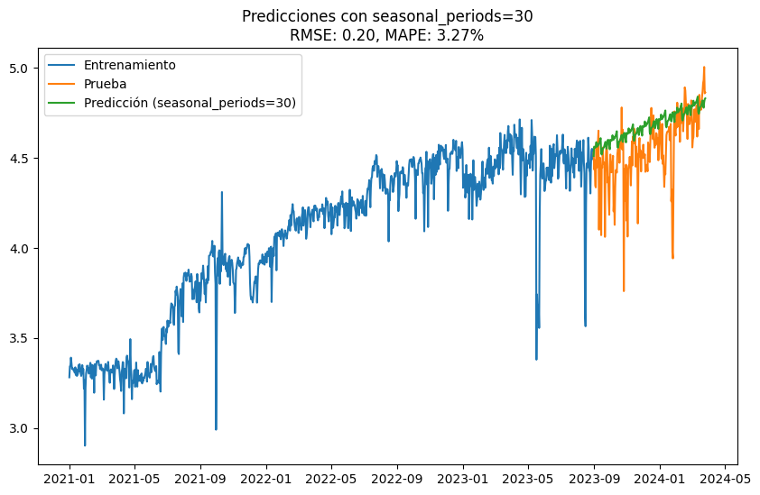
Seasonal Periods: 30
RMSE: 0.20
MAPE: 3.27%
------------------------------
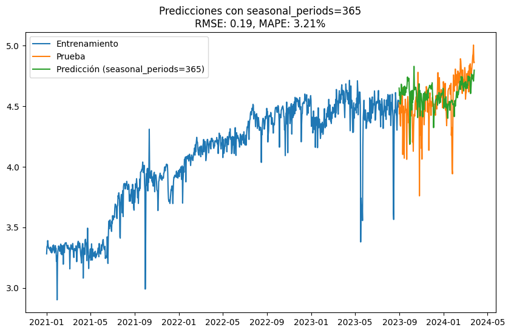
Seasonal Periods: 365
RMSE: 0.19
MAPE: 3.21%
------------------------------
import pandas as pd
import numpy as np
from matplotlib import pyplot as plt
import seaborn as sns
import statsmodels.api as sm
from sklearn.metrics import mean_absolute_error
import itertools
import warnings
from statsmodels.tools.sm_exceptions import ConvergenceWarning
warnings.simplefilter('ignore', ConvergenceWarning)
from statsmodels.tsa.holtwinters import ExponentialSmoothing
from statsmodels.tsa.holtwinters import SimpleExpSmoothing
from statsmodels.tsa.seasonal import seasonal_decompose
import statsmodels.tsa.api as smt
def tes_optimizer(train, test, abg, trend, seasonal, seasonal_periods, step):
best_alpha, best_beta, best_gamma, best_mae = None, None, None, float("inf")
for comb in abg:
tes_model = ExponentialSmoothing(train, trend=trend, seasonal=seasonal, seasonal_periods=seasonal_periods).\
fit(smoothing_level=comb[0], smoothing_slope=comb[1], smoothing_seasonal=comb[2])
y_pred = tes_model.forecast(step)
mae = mean_absolute_error(test, y_pred)
if mae < best_mae:
best_alpha, best_beta, best_gamma, best_mae = comb[0], comb[1], comb[2], mae
return best_alpha, best_beta, best_gamma, best_mae
def tes_model_tuning(train, test, step, trend, seasonal, seasonal_periods, title="Model Tuning - Triple Exponential Smoothing"):
alphas = betas = gammas = np.arange(0.10, 1, 0.10)
abg = list(itertools.product(alphas, betas, gammas))
best_alpha, best_beta, best_gamma, best_mae = tes_optimizer(train,test, abg=abg, trend=trend, seasonal=seasonal, seasonal_periods=seasonal_periods, step=step)
final_model = ExponentialSmoothing(train, trend=trend, seasonal=seasonal, seasonal_periods=seasonal_periods).fit(smoothing_level=best_alpha, smoothing_slope=best_beta, smoothing_seasonal=best_gamma)
y_pred = final_model.forecast(step)
mae = mean_absolute_error(test, y_pred)
return best_alpha, best_beta, best_gamma, best_mae
import warnings
# Ignorar todos los warnings
with warnings.catch_warnings():
warnings.simplefilter("ignore")
best_alpha, best_beta, best_gamma, best_mae = tes_model_tuning(train, test, step=209, trend='add', seasonal='mul', seasonal_periods=7)
# Continuar el código sin warnings
print(f"Best Alpha: {best_alpha}, Best Beta: {best_beta}, Best Gamma: {best_gamma}, Best MAE: {best_mae}")
Best Alpha: 0.1, Best Beta: 0.9, Best Gamma: 0.2, Best MAE: 0.133134610675421
final_model = ExponentialSmoothing(train, trend='add', seasonal='mul', seasonal_periods=7).fit(smoothing_level=best_alpha, smoothing_slope=best_beta, smoothing_seasonal=best_gamma)
y_pred = final_model.forecast(len(test))
C:\Users\cjcam\AppData\Local\Temp\ipykernel_20116\4120273442.py:1: FutureWarning:
the 'smoothing_slope' keyword is deprecated, use 'smoothing_trend' instead.
%matplotlib inline
import numpy as np
import pandas as pd
import matplotlib.pyplot as plt
import seaborn as sns
from sklearn.metrics import mean_squared_error, mean_absolute_percentage_error
# Calcular RMSE y MAPE entre y_pred y test
rmse = np.sqrt(mean_squared_error(test, y_pred))
mape = mean_absolute_percentage_error(test, y_pred)
# Configurar el estilo del gráfico con seaborn
sns.set(style="whitegrid") # Estilo limpio y claro
# Crear un DataFrame para graficar
df_plot = pd.DataFrame({
'Fecha': train.index.union(val.index).union(test.index), # Unión de los índices de train, val y test
'Entrenamiento': pd.concat([train, pd.Series([None]*len(val)).set_axis(val.index), pd.Series([None]*len(test)).set_axis(test.index)]),
'Validación': pd.concat([pd.Series([None]*len(train)).set_axis(train.index), val, pd.Series([None]*len(test)).set_axis(test.index)]),
'Prueba': pd.concat([pd.Series([None]*len(train)).set_axis(train.index), pd.Series([None]*len(val)).set_axis(val.index), test]),
'Predicción': pd.concat([pd.Series([None]*len(train)).set_axis(train.index), pd.Series([None]*len(val)).set_axis(val.index), pd.Series(y_pred).set_axis(test.index)])
})
# Graficar con matplotlib
fig, ax = plt.subplots(figsize=(14, 8))
# Colores y estilos de líneas
ax.plot(df_plot['Fecha'], df_plot['Entrenamiento'], label='Entrenamiento', color='#1f77b4', linewidth=2)
ax.plot(df_plot['Fecha'], df_plot['Validación'], label='Validación', color='#ff7f0e', linewidth=2)
ax.plot(df_plot['Fecha'], df_plot['Prueba'], label='Prueba', color='#2ca02c', linewidth=2)
ax.plot(df_plot['Fecha'], df_plot['Predicción'], label='Predicción', color='#d62728', linestyle='--', linewidth=2)
# Configuración de título y etiquetas
ax.set_title(f'Predicción vs Datos Reales\nRMSE: {rmse:.2f}, MAPE: {mape:.2%}', fontsize=18, fontweight='bold', color='navy')
ax.set_xlabel('Fecha', fontsize=14)
ax.set_ylabel('Valores', fontsize=14)
# Ajuste y personalización de leyenda
ax.legend(fontsize=12, loc='upper left', frameon=True, framealpha=0.8, shadow=True)
# Mejorar la visualización de las fechas en el eje X
fig.autofmt_xdate(rotation=45)
# Personalizar los límites del gráfico para mayor claridad
ax.margins(x=0.01, y=0.1)
# Mostrar el gráfico sin interactividad
plt.show()
# Imprimir las métricas
print(f"RMSE: {rmse:.2f}")
print(f"MAPE: {mape:.2%}")
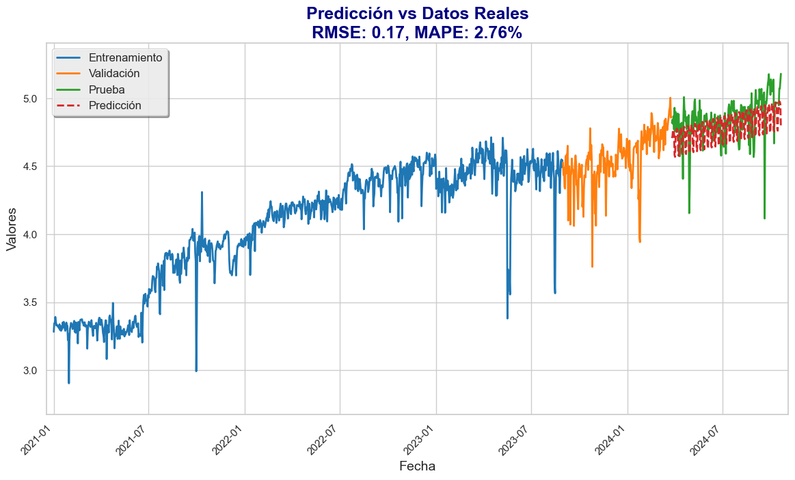
RMSE: 0.17
MAPE: 2.76%
IMPLEMENTACIÓN ARIMA#
import pandas as pd
import matplotlib.pyplot as plt
%matplotlib inline
d = pd.DataFrame(df['Demanda MW'].diff(1),index=df.index).dropna()
fig,axs = plt.subplots(3,2,figsize=(10,10))
for i,ax in enumerate(axs.flat):
ax.hist(d[i:],bins=30,alpha=0.7)
ax.set_title(r'Histogram $\{y_{t+%d}\}_{t=1}^{T}$' % (i))
plt.tight_layout()
plt.show()
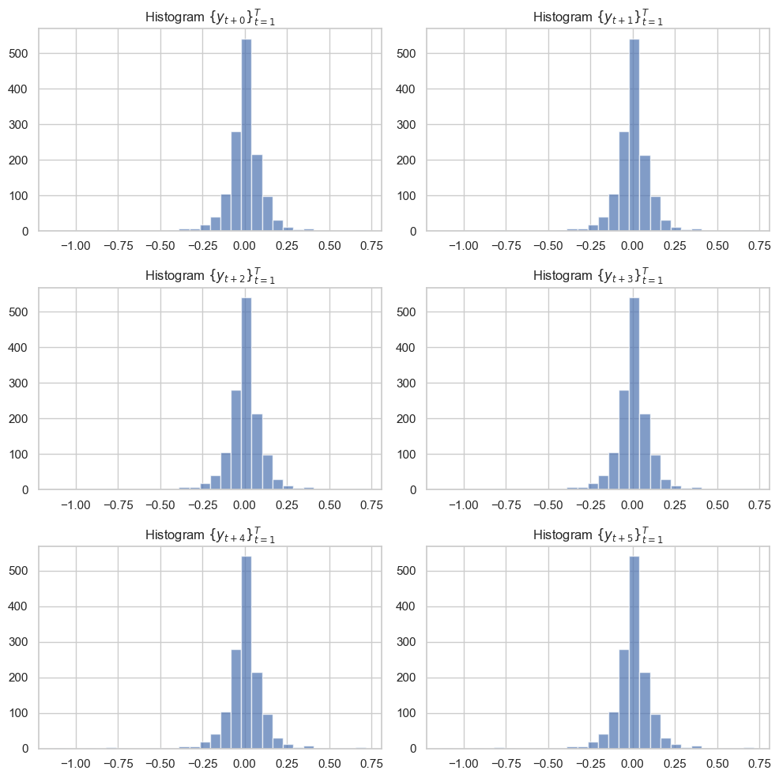
target_series = df['Demanda MW']
import datetime
import pytz
# Define the split date and set the same timezone as your dataframe index (US/Eastern)
split_date = datetime.datetime(year=2024, month=6, day=25, hour=0)
split_date = pytz.timezone('US/Eastern').localize(split_date)
# Define the target series
target_series = df['Demanda MW']
# Convert split_date to timezone-naive
split_date = split_date.replace(tzinfo=None)
# Now perform the initial split
train_initial = target_series.loc[target_series.index < split_date]
test = target_series.loc[target_series.index >= split_date]
# Step 2: Further split train_initial into train and validation sets based on 70-15 proportions
train_size = int(len(train_initial) * 0.7) # 70% of train_initial for training
val_size = len(train_initial) - train_size # Remaining 30% for validation
# Create the train and validation sets
train = train_initial[:train_size]
val = train_initial[train_size:]
# Output shapes to verify the split
print(f"Shape of train: {train.shape}")
print(f"Shape of validation: {val.shape}")
print(f"Shape of test: {test.shape}")
Shape of train: (889,)
Shape of validation: (382,)
Shape of test: (118,)
import statsmodels.tsa.api as smtsa
aicVal=[]
for diff_order in range(1,3):
for ari in range(0, 3):
try:
arima_obj = smtsa.ARIMA(train, order=(ari, diff_order, 0))
arima_obj_fit=arima_obj.fit()
aicVal.append([ari, diff_order, arima_obj_fit.aic])
except ValueError:
pass
dfAIC=pd.DataFrame(aicVal,columns=['AR(p)','diff_order','AIC'])
dfAIC
| AR(p) | diff_order | AIC | |
|---|---|---|---|
| 0 | 0 | 1 | -1607.169087 |
| 1 | 1 | 1 | -1661.001745 |
| 2 | 2 | 1 | -1679.051151 |
| 3 | 0 | 2 | -794.061176 |
| 4 | 1 | 2 | -1135.852556 |
| 5 | 2 | 2 | -1295.668823 |
print('Best ARIMA parameters based on AIC:\n')
dfAIC[dfAIC.AIC == dfAIC.AIC.min()]
Best ARIMA parameters based on AIC:
| AR(p) | diff_order | AIC | |
|---|---|---|---|
| 2 | 2 | 1 | -1679.051151 |
arima_mod = smtsa.ARIMA(train,order=(2,1,0))
arima_mod_fit = arima_mod.fit(method='statespace')
arima_mod_fit.summary()
| Dep. Variable: | Demanda MW | No. Observations: | 889 |
|---|---|---|---|
| Model: | ARIMA(2, 1, 0) | Log Likelihood | 842.526 |
| Date: | Fri, 25 Oct 2024 | AIC | -1679.051 |
| Time: | 15:45:51 | BIC | -1664.684 |
| Sample: | 01-01-2021 | HQIC | -1673.559 |
| - 06-08-2023 | |||
| Covariance Type: | opg |
| coef | std err | z | P>|z| | [0.025 | 0.975] | |
|---|---|---|---|---|---|---|
| ar.L1 | -0.2840 | 0.022 | -13.041 | 0.000 | -0.327 | -0.241 |
| ar.L2 | -0.1496 | 0.017 | -8.722 | 0.000 | -0.183 | -0.116 |
| sigma2 | 0.0088 | 0.000 | 86.289 | 0.000 | 0.009 | 0.009 |
| Ljung-Box (L1) (Q): | 0.17 | Jarque-Bera (JB): | 51593.88 |
|---|---|---|---|
| Prob(Q): | 0.68 | Prob(JB): | 0.00 |
| Heteroskedasticity (H): | 1.49 | Skew: | -2.71 |
| Prob(H) (two-sided): | 0.00 | Kurtosis: | 39.95 |
Warnings:
[1] Covariance matrix calculated using the outer product of gradients (complex-step).
# prompt: include a plot that has the arima model the train and test with arima predictions
import matplotlib.pyplot as plt
# Assuming 'arima_mod_fit' and 'test' are already defined from your previous code
# and contain the fitted ARIMA model and the test data respectively.
# Make predictions on the test set
predictions = arima_mod_fit.predict(start=len(train), end=len(train) + len(val) - 1)
# Plot the results
plt.figure(figsize=(12, 6))
plt.plot(train.index, train, label='Train')
plt.plot(val.index, val, label='Validation')
plt.plot(val.index, predictions, label='ARIMA Predictions')
plt.legend()
plt.title('ARIMA Model Predictions')
plt.xlabel('Date')
plt.ylabel('Demanda MW')
plt.show()
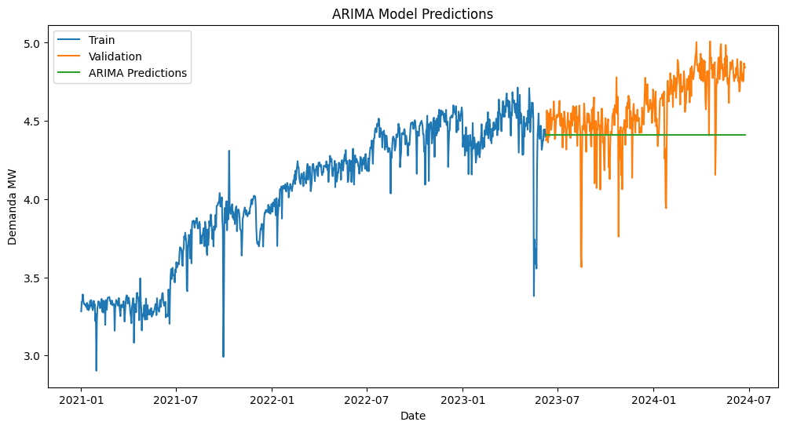
# prompt: now include a for cycle as the one in previous code but including the ma in range(0,3) and also then get the best model minimizing the aic
import statsmodels.tsa.arima.model as smtsa
import pytz
aicVal = []
for diff_order in range(0, 3): # Changed range to start from 0
for ari in range(0, 3):
for maj in range(0,3):
try:
arima_obj = smtsa.ARIMA(train, order=(ari, diff_order, maj))
arima_obj_fit = arima_obj.fit()
aicVal.append([ari, diff_order,maj, arima_obj_fit.aic])
except ValueError:
pass
dfAIC = pd.DataFrame(aicVal, columns=['AR(p)', 'diff_order','MA(q)', 'AIC'])
print('Best ARIMA parameters based on AIC:\n')
best_params = dfAIC.loc[dfAIC['AIC'].idxmin()]
print(best_params)
# Fit the best ARIMA model
best_arima_mod = smtsa.ARIMA(train, order=(int(best_params['AR(p)']), int(best_params['diff_order']), best_params['MA(q)']))
best_arima_mod_fit = best_arima_mod.fit(method='statespace')
# Make predictions using the best model
predictions = best_arima_mod_fit.predict(start=len(train), end=len(train) + len(test) - 1)
Best ARIMA parameters based on AIC:
AR(p) 1.000000
diff_order 1.000000
MA(q) 2.000000
AIC -1739.659712
Name: 14, dtype: float64
best_arima_mod_fit.summary()
| Dep. Variable: | Demanda MW | No. Observations: | 889 |
|---|---|---|---|
| Model: | ARIMA(1, 1, 2) | Log Likelihood | 873.830 |
| Date: | Fri, 25 Oct 2024 | AIC | -1739.660 |
| Time: | 15:49:55 | BIC | -1720.504 |
| Sample: | 01-01-2021 | HQIC | -1732.337 |
| - 06-08-2023 | |||
| Covariance Type: | opg |
| coef | std err | z | P>|z| | [0.025 | 0.975] | |
|---|---|---|---|---|---|---|
| ar.L1 | 0.6741 | 0.036 | 18.923 | 0.000 | 0.604 | 0.744 |
| ma.L1 | -1.0384 | 0.051 | -20.519 | 0.000 | -1.138 | -0.939 |
| ma.L2 | 0.1045 | 0.040 | 2.632 | 0.008 | 0.027 | 0.182 |
| sigma2 | 0.0082 | 9.67e-05 | 84.549 | 0.000 | 0.008 | 0.008 |
| Ljung-Box (L1) (Q): | 0.02 | Jarque-Bera (JB): | 59912.71 |
|---|---|---|---|
| Prob(Q): | 0.89 | Prob(JB): | 0.00 |
| Heteroskedasticity (H): | 1.50 | Skew: | -3.50 |
| Prob(H) (two-sided): | 0.00 | Kurtosis: | 42.63 |
Warnings:
[1] Covariance matrix calculated using the outer product of gradients (complex-step).
import matplotlib.pyplot as plt
# Make predictions on the test set
predictions = best_arima_mod_fit.predict(start=len(train), end=len(train) + len(test) - 1)
# Plot the results
plt.figure(figsize=(12, 6))
plt.plot(train.index, train, label='Train')
plt.plot(val.index, val, label='Validation')
plt.plot(test.index, test, label='Test')
plt.plot(test.index, predictions, label='ARIMA Predictions')
plt.legend()
plt.title('ARIMA Model Predictions')
plt.xlabel('Date')
plt.ylabel('Demanda MW')
plt.show()
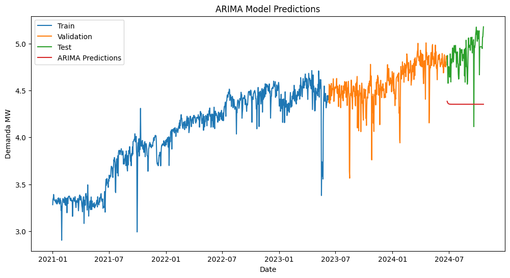
MLP for TS#
import datetime
import pytz
import numpy as np
import pandas as pd
import matplotlib.pyplot as plt
from sklearn.preprocessing import MinMaxScaler
from sklearn.metrics import mean_squared_error
from tensorflow.keras.models import Sequential
from tensorflow.keras.layers import Dense
from tensorflow.keras.callbacks import EarlyStopping
# Step 1: Data Splitting
# Define the split date and convert to timezone-naive
split_date = datetime.datetime(year=2024, month=9, day=25, hour=0)
split_date = pytz.timezone('US/Eastern').localize(split_date)
split_date = split_date.replace(tzinfo=None)
# Define the target series
target_series = df['Demanda MW']
# Perform the time-based split
train_initial = target_series.loc[target_series.index < split_date]
test = target_series.loc[target_series.index >= split_date]
# Further split train_initial into train and validation sets
train_size = int(len(train_initial) * 0.7)
train = train_initial[:train_size]
val = train_initial[train_size:]
# Prepare data with lagged features for MLP input
def create_lagged_features(series, n_lags):
data = pd.DataFrame(series)
columns = [data.shift(i) for i in range(n_lags, 0, -1)]
columns.append(data)
data = pd.concat(columns, axis=1)
data.dropna(inplace=True)
return data
n_lags = 5 # Number of lagged features
train_data = create_lagged_features(train, n_lags)
val_data = create_lagged_features(val, n_lags)
test_data = create_lagged_features(test, n_lags)
# Separate features and targets
X_train, y_train = train_data.iloc[:, :-1], train_data.iloc[:, -1]
X_val, y_val = val_data.iloc[:, :-1], val_data.iloc[:, -1]
X_test, y_test = test_data.iloc[:, :-1], test_data.iloc[:, -1]
# Scale the features
scaler = MinMaxScaler()
X_train = scaler.fit_transform(X_train)
X_val = scaler.transform(X_val)
X_test = scaler.transform(X_test)
# Function to plot results with RMSE
def plot_results(model, X_train, y_train, X_val, y_val, X_test, y_test, title):
y_train_pred = model.predict(X_train)
y_val_pred = model.predict(X_val)
y_test_pred = model.predict(X_test)
# Calculate RMSE for each set
train_rmse = np.sqrt(mean_squared_error(y_train, y_train_pred))
val_rmse = np.sqrt(mean_squared_error(y_val, y_val_pred))
test_rmse = np.sqrt(mean_squared_error(y_test, y_test_pred))
test_mape = mean_absolute_percentage_error(y_test, y_test_pred)
plt.figure(figsize=(14, 7))
plt.plot(train.index[n_lags:], y_train, label='Train Data')
plt.plot(train.index[n_lags:], y_train_pred, label='Train Prediction')
plt.plot(val.index[n_lags:], y_val, label='Validation Data')
plt.plot(val.index[n_lags:], y_val_pred, label='Validation Prediction')
plt.plot(test.index[n_lags:], y_test, label='Test Data')
plt.plot(test.index[n_lags:], y_test_pred, label='Test Prediction')
# Display RMSE values in the plot
plt.title(f"{title}\nTrain RMSE: {train_rmse:.4f} | Validation RMSE: {val_rmse:.4f} | Test RMSE: {test_rmse:.4f} | Test Mape: {test_mape:.2%}")
plt.xlabel('Date')
plt.ylabel('Demanda MW')
plt.legend()
plt.grid()
plt.show()
# Step 2: Model 1 - Only one hyperparameter optimized (e.g., units in hidden layer)
# Define the model
model1 = Sequential()
model1.add(Dense(64, activation='relu', input_shape=(n_lags,)))
model1.add(Dense(1))
model1.compile(optimizer='adam', loss='mae')
early_stopping = EarlyStopping(monitor='val_loss', patience=5, restore_best_weights=True)
# Train the model
model1.fit(X_train, y_train, epochs=100, batch_size=32, validation_data=(X_val, y_val),
callbacks=[early_stopping], verbose=0)
# Plot Model 1 results
plot_results(model1, X_train, y_train, X_val, y_val, X_test, y_test, title='Model 1 - One Hyperparameter Optimized')
# Step 3: Model 2 - Fully optimized model
# Define a more complex model with more hyperparameters
model2 = Sequential()
model2.add(Dense(128, activation='relu', input_shape=(n_lags,)))
model2.add(Dense(64, activation='relu'))
model2.add(Dense(32, activation='relu'))
model2.add(Dense(1))
# Compile with a custom learning rate and batch size
model2.compile(optimizer='adam', loss='mse')
early_stopping = EarlyStopping(monitor='val_loss', patience=10, restore_best_weights=True)
# Train the model
model2.fit(X_train, y_train, epochs=200, batch_size=16, validation_data=(X_val, y_val),
callbacks=[early_stopping], verbose=0)
# Plot Model 2 results
plot_results(model2, X_train, y_train, X_val, y_val, X_test, y_test, title='Model 2 - Fully Optimized')
30/30 [==============================] - 0s 794us/step
13/13 [==============================] - 0s 355us/step
1/1 [==============================] - 0s 24ms/step
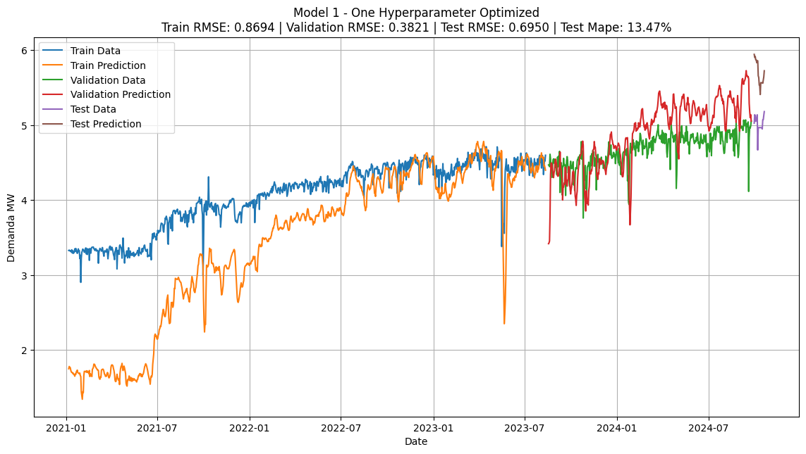
30/30 [==============================] - 0s 1ms/step
13/13 [==============================] - 0s 1ms/step
1/1 [==============================] - 0s 19ms/step
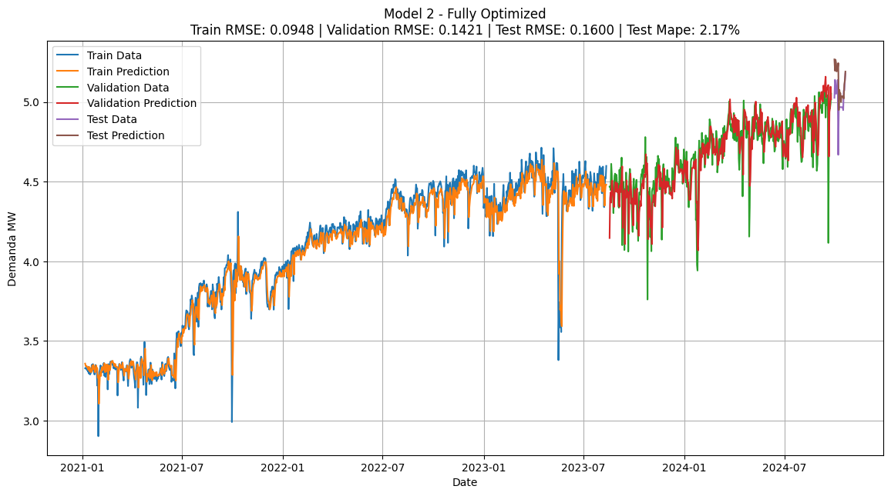
LSTM for ST#
import numpy as np
from sklearn.preprocessing import MinMaxScaler
import matplotlib.pyplot as plt
from keras.models import Sequential
from keras.layers import LSTM, GRU, Dense
from sklearn.metrics import mean_squared_error, r2_score
def create_sequences(data, n_steps):
X, y = [], []
for i in range(len(data)):
end_ix = i + n_steps
if end_ix > len(data)-1:
break
seq_x, seq_y = data[i:end_ix], data[end_ix]
X.append(seq_x)
y.append(seq_y)
return np.array(X), np.array(y)
def build_and_train_model(model_type, X_train, y_train, n_steps, n_features, epochs):
model = Sequential()
if model_type == 'LSTM':
model.add(LSTM(50, return_sequences=True, input_shape=(n_steps, n_features)))
model.add(LSTM(50, return_sequences=False))
elif model_type == 'GRU':
model.add(GRU(50, return_sequences=True, input_shape=(n_steps, n_features)))
model.add(GRU(50, return_sequences=False))
model.add(Dense(1))
model.compile(optimizer='adam', loss='mse')
model.fit(X_train, y_train, epochs=epochs, batch_size=32, validation_split=0.2, verbose=0)
return model
import numpy as np
from sklearn.preprocessing import MinMaxScaler
n_steps_list = [7,15,30,60 ]
epochs_list = [50, 100,150]
data = df['Demanda MW'].to_numpy()
# Normalizar los datos
scaler = MinMaxScaler()
data = scaler.fit_transform(data.reshape(-1, 1))
# Dividir en conjuntos de entrenamiento, validación y prueba (70% train, 15% val, 15% test)
train_size = int(0.7 * len(data))
val_size = int(0.15 * len(data))
test_size = len(data) - train_size - val_size
train_data = data[:train_size]
val_data = data[train_size:train_size + val_size]
test_data = data[train_size + val_size:] # Reservado para futuras pruebas
results = []
for n_steps in n_steps_list:
for epochs in epochs_list:
# Crear las secuencias de entrada (X) y las etiquetas de salida (y) para entrenamiento
X_train, y_train = create_sequences(train_data, n_steps)
n_features = 1
X_train = X_train.reshape((X_train.shape[0], X_train.shape[1], n_features))
# Crear las secuencias de entrada (X) y las etiquetas de salida (y) para validación
X_val, y_val = create_sequences(val_data, n_steps)
X_val = X_val.reshape((X_val.shape[0], X_val.shape[1], n_features))
# Entrenar y evaluar el modelo LSTM en los datos de entrenamiento y validación
model_lstm = build_and_train_model('LSTM', X_train, y_train, n_steps, n_features, epochs)
# Evaluar en el conjunto de validación
predictions_val = model_lstm.predict(X_val)
predictions_val_inv = scaler.inverse_transform(predictions_val)
y_val_inv = scaler.inverse_transform(y_val)
rmse_val = np.sqrt(mean_squared_error(y_val_inv, predictions_val_inv))
r2_val = r2_score(y_val_inv, predictions_val_inv)
# Guardar los resultados
results.append({
'n_steps': n_steps,
'epochs': epochs,
'rmse_val': rmse_val,
'r2_val': r2_val
})
# Mostrar los resultados
for result in results:
print(f"n_steps: {result['n_steps']}, epochs: {result['epochs']}")
print(f"RMSE Validation: {result['rmse_val']}, R2 Validation: {result['r2_val']}")
print()
7/7 [==============================] - 0s 2ms/step
7/7 [==============================] - 0s 0s/step
7/7 [==============================] - 1s 3ms/step
7/7 [==============================] - 0s 3ms/step
7/7 [==============================] - 1s 6ms/step
7/7 [==============================] - 0s 3ms/step
6/6 [==============================] - 0s 7ms/step
6/6 [==============================] - 0s 8ms/step
6/6 [==============================] - 0s 8ms/step
5/5 [==============================] - 0s 14ms/step
5/5 [==============================] - 0s 12ms/step
5/5 [==============================] - 1s 20ms/step
n_steps: 7, epochs: 50
RMSE Validation: 0.15954718546383323, R2 Validation: 0.3075983560625609
n_steps: 7, epochs: 100
RMSE Validation: 0.14951065900572233, R2 Validation: 0.391971260767233
n_steps: 7, epochs: 150
RMSE Validation: 0.13935843819991073, R2 Validation: 0.47174169106683606
n_steps: 15, epochs: 50
RMSE Validation: 0.18417610859302339, R2 Validation: 0.04693284259614405
n_steps: 15, epochs: 100
RMSE Validation: 0.1504247083155643, R2 Validation: 0.36423696264706884
n_steps: 15, epochs: 150
RMSE Validation: 0.1336020964834111, R2 Validation: 0.4984855334705728
n_steps: 30, epochs: 50
RMSE Validation: 0.14682223137963962, R2 Validation: 0.3813138098021308
n_steps: 30, epochs: 100
RMSE Validation: 0.136261696024023, R2 Validation: 0.4671139364727075
n_steps: 30, epochs: 150
RMSE Validation: 0.12947858521720249, R2 Validation: 0.5188475820981618
n_steps: 60, epochs: 50
RMSE Validation: 0.1419420776323795, R2 Validation: 0.3434613639085914
n_steps: 60, epochs: 100
RMSE Validation: 0.1374879682806093, R2 Validation: 0.3840189361319557
n_steps: 60, epochs: 150
RMSE Validation: 0.11276243482381325, R2 Validation: 0.5856504584621574
import numpy as np
from sklearn.preprocessing import MinMaxScaler
data = df['Demanda MW'].to_numpy()
# Normalizar los datos
scaler = MinMaxScaler()
data = scaler.fit_transform(data.reshape(-1, 1))
# Dividir en conjuntos de entrenamiento, validación y prueba (70% train, 15% val, 15% test)
train_size = int(0.7 * len(data))
val_size = int(0.15 * len(data))
test_size = len(data) - train_size - val_size
train_data = data[:train_size]
val_data = data[train_size:train_size + val_size]
test_data = data[train_size + val_size:] # Reservado para futuras pruebas
# Definir la ventana de tiempo
n_steps = 15
# Crear las secuencias de entrada (X) y las etiquetas de salida (y) para entrenamiento
X_train, y_train = [], []
for i in range(len(train_data)):
end_ix = i + n_steps
if end_ix > len(train_data)-1:
break
seq_x, seq_y = train_data[i:end_ix], train_data[end_ix]
X_train.append(seq_x)
y_train.append(seq_y)
X_train, y_train = np.array(X_train), np.array(y_train)
# Crear las secuencias de entrada (X) y las etiquetas de salida (y) para prueba
X_val, y_val = [], []
for i in range(len(val_data)):
end_ix = i + n_steps
if end_ix > len(val_data)-1:
break
seq_x, seq_y = val_data[i:end_ix], val_data[end_ix]
X_val.append(seq_x)
y_val.append(seq_y)
X_val, y_val = np.array(X_val), np.array(y_val)
# Redefinir la forma de X_train y X_test para que sean compatibles con LSTM/GRU
n_features = 1
X_train = X_train.reshape((X_train.shape[0], X_train.shape[1], n_features))
X_test = X_val.reshape((X_val.shape[0], X_val.shape[1], n_features))
print("Forma de X_train:", X_train.shape)
print("Forma de y_train:", y_train.shape)
print("Forma de X_val", X_val.shape)
print("Forma de y_val:", y_val.shape)
Forma de X_train: (957, 15, 1)
Forma de y_train: (957, 1)
Forma de X_val (193, 15, 1)
Forma de y_val: (193, 1)
from keras.models import Sequential
from keras.layers import LSTM, Dense
n_neurons = 50
validation_split = 0.2
# Construir el modelo LSTM
model_lstm = Sequential()
model_lstm.add(LSTM(n_neurons, return_sequences=True, input_shape=(n_steps, n_features)))
model_lstm.add(LSTM(n_neurons, return_sequences=False))
model_lstm.add(Dense(1))
model_lstm.compile(optimizer='adam', loss='mae')
# Entrenar el modelo LSTM con la mejor combinación de parámetros
history = model_lstm.fit(X_train, y_train, epochs=150, batch_size=32, validation_split=validation_split, verbose=0)
# Imprimir los resultados del entrenamiento
print("Entrenamiento completado con la mejor combinación de neuronas y validation split")
Entrenamiento completado con la mejor combinación de neuronas y validation split
# Hacer predicciones
y_pred = model_lstm.predict(X_val)
# Invertir la escala de los datos
y_val_inv = scaler.inverse_transform(y_val.reshape(-1, 1))
y_pred_inv = scaler.inverse_transform(y_pred)
# Ajustar las predicciones si es necesario
y_pred_inv = np.roll(y_pred_inv, shift=-1)
# Evaluar el modelo en el conjunto de test
mae = mean_absolute_error(y_val_inv, y_pred_inv)
mse = mean_squared_error(y_val_inv, y_pred_inv)
mape = mean_absolute_percentage_error(y_val_inv, y_pred_inv)
print(f'MAE: {mae}')
print(f'MSE: {mse}')
print(f'MAPE: {mape}')
import numpy as np
import pandas as pd
import matplotlib.pyplot as plt
import seaborn as sns
from sklearn.metrics import mean_squared_error, mean_absolute_percentage_error
# Crear un DataFrame con los valores reales y las predicciones
df_plot = pd.DataFrame({
'Índice': np.arange(len(y_val_inv)), # Índices de las muestras
'Valores Reales': y_val_inv.flatten(), # Convertir a formato plano
'Predicciones Ajustadas': y_pred_inv.flatten() # Convertir a formato plano
})
# Calcular RMSE y MAPE entre y_val_inv y y_pred_inv
rmse = np.sqrt(mean_squared_error(y_val_inv, y_pred_inv))
mape = mean_absolute_percentage_error(y_val_inv, y_pred_inv)
# Configurar el estilo del gráfico con seaborn
sns.set(style="whitegrid") # Estilo de fondo limpio
# Graficar con matplotlib
fig, ax = plt.subplots(figsize=(12, 6))
# Gráfico de Valores Reales y Predicciones Ajustadas
ax.plot(df_plot['Índice'], df_plot['Valores Reales'], label='Valores Reales', color='#1f77b4', linewidth=2)
ax.plot(df_plot['Índice'], df_plot['Predicciones Ajustadas'], label='Predicciones Ajustadas', color='#ff7f0e', linestyle='--', linewidth=2)
# Configuración de título y etiquetas
ax.set_title(f'Comparación de Valores Reales y Predicciones Ajustadas\nRMSE: {rmse:.2f}, MAPE: {mape:.2%}', fontsize=16, fontweight='bold', color='navy')
ax.set_xlabel('Índice', fontsize=12)
ax.set_ylabel('Valor', fontsize=12)
# Personalización de la leyenda
ax.legend(fontsize=10, loc='upper right', frameon=True, framealpha=0.9, shadow=True)
# Mostrar el gráfico
plt.tight_layout()
plt.show()
# Imprimir las métricas
print(f"RMSE: {rmse:.2f}")
print(f"MAPE: {mape:.2%}")
7/7 [==============================] - 0s 4ms/step
MAE: 0.03646080543636659
MSE: 0.004566701089533899
MAPE: 0.008130409211999317
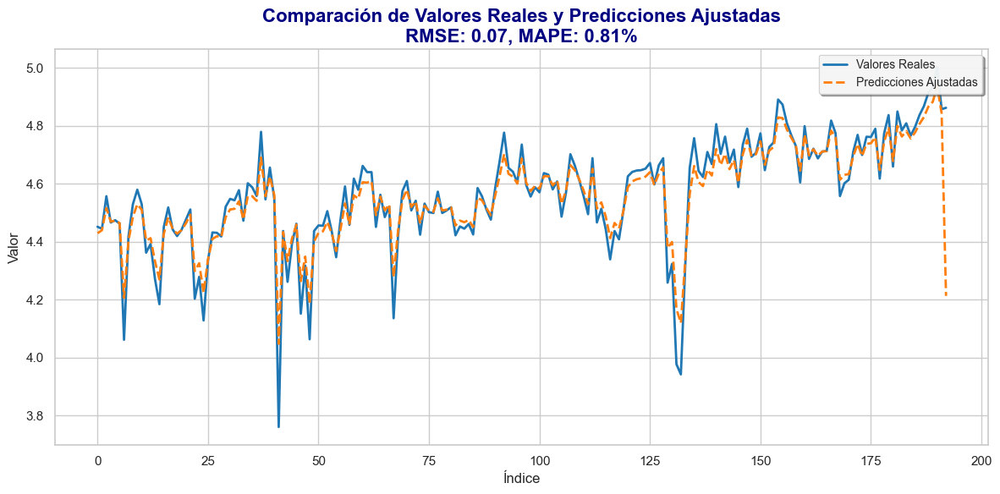
RMSE: 0.07
MAPE: 0.81%
import numpy as np
from keras.models import Sequential
from keras.layers import LSTM, Dense
# Parámetros que vas a probar
n_neurons_list = [50, 100, 150] # Diferentes números de neuronas en las capas LSTM
validation_split_list = [0.1, 0.2, 0.3] # Diferentes valores de validation_split
# Resultados para almacenar las métricas de entrenamiento y validación
results = []
for n_neurons in n_neurons_list:
for validation_split in validation_split_list:
# Construir el modelo LSTM
model_lstm = Sequential()
model_lstm.add(LSTM(n_neurons, return_sequences=True, input_shape=(n_steps, n_features)))
model_lstm.add(LSTM(n_neurons, return_sequences=False))
model_lstm.add(Dense(1))
model_lstm.compile(optimizer='adam', loss='mae')
# Entrenar el modelo LSTM con diferentes valores de validation_split
history = model_lstm.fit(X_train, y_train, epochs=150, batch_size=32, validation_split=validation_split, verbose=0)
# Guardar los resultados de cada configuración
results.append({
'n_neurons': n_neurons,
'validation_split': validation_split,
'train_loss': history.history['loss'][-1], # Último valor de la pérdida de entrenamiento
'val_loss': history.history['val_loss'][-1] # Último valor de la pérdida de validación
})
# Mostrar los resultados
for result in results:
print(f"Neurons: {result['n_neurons']}, Validation Split: {result['validation_split']}")
print(f"Train Loss: {result['train_loss']}, Val Loss: {result['val_loss']}")
print()
Neurons: 50, Validation Split: 0.1
Train Loss: 0.02399870939552784, Val Loss: 0.036713577806949615
Neurons: 50, Validation Split: 0.2
Train Loss: 0.02227776311337948, Val Loss: 0.04088104888796806
Neurons: 50, Validation Split: 0.3
Train Loss: 0.023068655282258987, Val Loss: 0.03555840626358986
Neurons: 100, Validation Split: 0.1
Train Loss: 0.024829773232340813, Val Loss: 0.03739260509610176
Neurons: 100, Validation Split: 0.2
Train Loss: 0.023189838975667953, Val Loss: 0.03899120166897774
Neurons: 100, Validation Split: 0.3
Train Loss: 0.025611601769924164, Val Loss: 0.03381110355257988
Neurons: 150, Validation Split: 0.1
Train Loss: 0.024213729426264763, Val Loss: 0.035481881350278854
Neurons: 150, Validation Split: 0.2
Train Loss: 0.02378394454717636, Val Loss: 0.03828693926334381
Neurons: 150, Validation Split: 0.3
Train Loss: 0.021595284342765808, Val Loss: 0.03464974835515022
from keras.models import Sequential
from keras.layers import LSTM, Dense
# Mejor combinación de parámetros
n_neurons = 50 # Mejor número de neuronas
validation_split = 0.1 # Mejor validation split
# Construir el modelo LSTM
model_lstm = Sequential()
model_lstm.add(LSTM(n_neurons, return_sequences=True, input_shape=(n_steps, n_features)))
model_lstm.add(LSTM(n_neurons, return_sequences=False))
model_lstm.add(Dense(1))
model_lstm.compile(optimizer='adam', loss='mae')
# Entrenar el modelo LSTM con la mejor combinación de parámetros
history = model_lstm.fit(X_train, y_train, epochs=150, batch_size=32, validation_split=validation_split, verbose=0)
# Imprimir los resultados del entrenamiento
print("Entrenamiento completado con la mejor combinación de neuronas y validation split")
Entrenamiento completado con la mejor combinación de neuronas y validation split
# Obtener los valores de pérdida
loss_values = history.history['loss']
val_loss_values = history.history['val_loss']
# Graficar loss y val_loss
epochs = range(1, len(loss_values) + 1)
plt.plot(epochs, loss_values, 'bo-', label='Pérdida de Entrenamiento')
plt.plot(epochs, val_loss_values, 'ro-', label='Pérdida de Validación')
plt.xlabel('Época')
plt.ylabel('Pérdida')
plt.title('Pérdida de Entrenamiento y Validación vs. Época')
plt.legend()
plt.show()
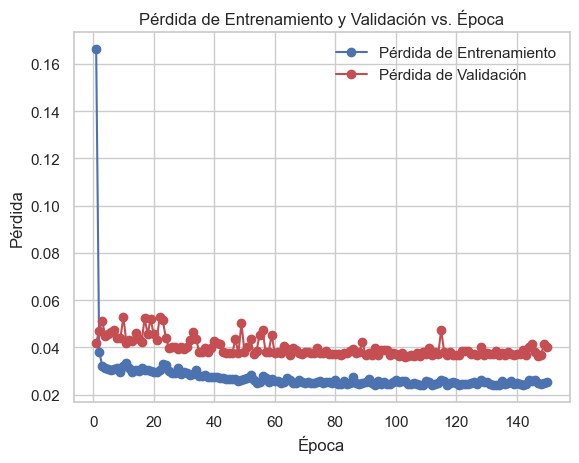
from keras.models import Model
from keras.layers import Input, LSTM, Dropout, Dense
# Definir la entrada con shape (15,1)
input_shape = (15, 1)
input_layer = Input(shape=input_shape)
# Primera capa LSTM con 150 neuronas y return_sequences=True
lstm_layer1 = LSTM(50, return_sequences=True)(input_layer)
# Segunda capa LSTM con 150 neuronas y return_sequences=False
lstm_layer2 = LSTM(50, return_sequences=False)(lstm_layer1)
# Capa Dropout con probabilidad de 0.4
dropout_layer = Dropout(0.3)(lstm_layer2)
# Capa de salida con 1 neurona (para regresión)
output_layer = Dense(1, activation='linear')(dropout_layer)
# Construir el modelo
model_lstm = Model(inputs=input_layer, outputs=output_layer)
# Compilar el modelo
model_lstm.compile(optimizer='adam', loss='mae')
# Mostrar la estructura del modelo
model_lstm.summary()
Model: "model"
_________________________________________________________________
Layer (type) Output Shape Param #
=================================================================
input_1 (InputLayer) [(None, 15, 1)] 0
lstm_4 (LSTM) (None, 15, 50) 10400
lstm_5 (LSTM) (None, 50) 20200
dropout (Dropout) (None, 50) 0
dense_2 (Dense) (None, 1) 51
=================================================================
Total params: 30,651
Trainable params: 30,651
Non-trainable params: 0
_________________________________________________________________
history = model_lstm.fit(X_train, y_train, epochs=150, batch_size=32, validation_split=0.1, verbose=0)
import numpy as np
from sklearn.preprocessing import MinMaxScaler
# Definir la ventana de tiempo
n_steps = 15
# Crear las secuencias de entrada (X) y las etiquetas de salida (y) para entrenamiento
X_train, y_train = [], []
for i in range(len(train_data)):
end_ix = i + n_steps
if end_ix > len(train_data)-1:
break
seq_x, seq_y = train_data[i:end_ix], train_data[end_ix]
X_train.append(seq_x)
y_train.append(seq_y)
X_train, y_train = np.array(X_train), np.array(y_train)
# Crear las secuencias de entrada (X) y las etiquetas de salida (y) para prueba
X_test, y_test = [], []
for i in range(len(test_data)):
end_ix = i + n_steps
if end_ix > len(test_data)-1:
break
seq_x, seq_y = test_data[i:end_ix], test_data[end_ix]
X_test.append(seq_x)
y_test.append(seq_y)
X_test, y_test = np.array(X_test), np.array(y_test)
# Redefinir la forma de X_train y X_test para que sean compatibles con LSTM/GRU
n_features = 1
X_train = X_train.reshape((X_train.shape[0], X_train.shape[1], n_features))
X_test = X_test.reshape((X_test.shape[0], X_test.shape[1], n_features))
print("Forma de X_train:", X_train.shape)
print("Forma de y_train:", y_train.shape)
print("Forma de X_test:", X_test.shape)
print("Forma de y_test:", y_test.shape)
Forma de X_train: (957, 15, 1)
Forma de y_train: (957, 1)
Forma de X_test: (194, 15, 1)
Forma de y_test: (194, 1)
# Hacer predicciones
y_pred = model_lstm.predict(X_test)
# Invertir la escala de los datos
y_test_inv = scaler.inverse_transform(y_test.reshape(-1, 1))
y_pred_inv = scaler.inverse_transform(y_pred)
# Ajustar las predicciones si es necesario
y_pred_inv = np.roll(y_pred_inv, shift=-1)
# Evaluar el modelo en el conjunto de test
mae = mean_absolute_error(y_test_inv, y_pred_inv)
mse = mean_squared_error(y_test_inv, y_pred_inv)
mape = mean_absolute_percentage_error(y_test_inv, y_pred_inv)
print(f'MAE: {mae}')
print(f'MSE: {mse}')
print(f'MAPE: {mape}')
import numpy as np
import pandas as pd
import matplotlib.pyplot as plt
import seaborn as sns
from sklearn.metrics import mean_squared_error, mean_absolute_percentage_error
# Crear un DataFrame con los valores reales y las predicciones
df_plot = pd.DataFrame({
'Índice': np.arange(len(y_test_inv)), # Índices de las muestras
'Valores Reales': y_test_inv.flatten(), # Convertir a formato plano
'Predicciones Ajustadas': y_pred_inv.flatten() # Convertir a formato plano
})
# Calcular RMSE y MAPE entre y_test_inv y y_pred_inv
rmse = np.sqrt(mean_squared_error(y_test_inv, y_pred_inv))
mape = mean_absolute_percentage_error(y_test_inv, y_pred_inv)
# Configurar el estilo del gráfico con seaborn
sns.set(style="whitegrid") # Estilo de fondo claro y limpio
# Graficar con matplotlib
fig, ax = plt.subplots(figsize=(12, 6))
# Gráfico de Valores Reales y Predicciones Ajustadas
ax.plot(df_plot['Índice'], df_plot['Valores Reales'], label='Valores Reales', color='#1f77b4', linewidth=2)
ax.plot(df_plot['Índice'], df_plot['Predicciones Ajustadas'], label='Predicciones Ajustadas', color='#ff7f0e', linestyle='--', linewidth=2)
# Configuración de título y etiquetas
ax.set_title(f'Comparación de Valores Reales y Predicciones Ajustadas\nRMSE: {rmse:.2f}, MAPE: {mape:.2%}', fontsize=16, fontweight='bold', color='navy')
ax.set_xlabel('Índice', fontsize=12)
ax.set_ylabel('Valor', fontsize=12)
# Personalización de la leyenda
ax.legend(fontsize=10, loc='upper right', frameon=True, framealpha=0.9, shadow=True)
# Ajustar el diseño y mostrar el gráfico
plt.tight_layout()
plt.show()
# Imprimir las métricas
print(f"RMSE: {rmse:.2f}")
print(f"MAPE: {mape:.2%}")
7/7 [==============================] - 1s 5ms/step
MAE: 0.03787839084900533
MSE: 0.004083743437630374
MAPE: 0.007955695092998745
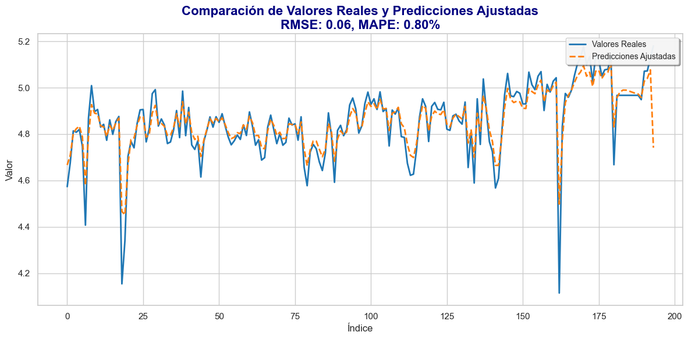
RMSE: 0.06
MAPE: 0.80%